Testing the VMM threshold theory, step by step
P2_OUT at the SPS, July–August 2026. The VMM records 85 % of tracks and DREAM 96 % on the same chamber. The theory: the VMM's discriminator is set too high for the chamber's gain. This page explains how that was tested: fit the model once, then check whether it predicts runs where only one setting was changed.
sdt is, how one config value turns into
mV, VMM ADC and fC, where the noise floor is, and how low the thresholds could go with per-channel trimming.New: Part 3 takes the 29–30 July threshold scan channel by channel. It covers how far each chip can come down, how many channels that costs, and what efficiency results.
New: Part 4 explains step by step how each chip's baseline is estimated, how the threshold d is defined, how sure those numbers are, and how they set the cosmic threshold scan.
0The setup, and the idea in one picture
The same P2 chamber (det3, at station P2_OUT) was read out by two different front-end chips, on different days, in the same beam at the same HV (mesh 450 V, drift 750 V). A uRWELL telescope gives a reference track, so for every pad we can ask: when a particle crossed this pad, did the readout record a hit?
The VMM decides before digitising: a pulse under its threshold leaves no trace at all. DREAM digitises first and applies its own low, per-channel cut afterwards.
The theory says the VMM's threshold sits inside the signal distribution, while DREAM's sits far below it. In the picture below, the orange curve is the pulse-height spectrum DREAM measured on a pad, the dashed line is DREAM's own threshold, and the blue line is where the VMM threshold would have to sit. Everything to the left of the blue line is a particle DREAM records and the VMM does not.
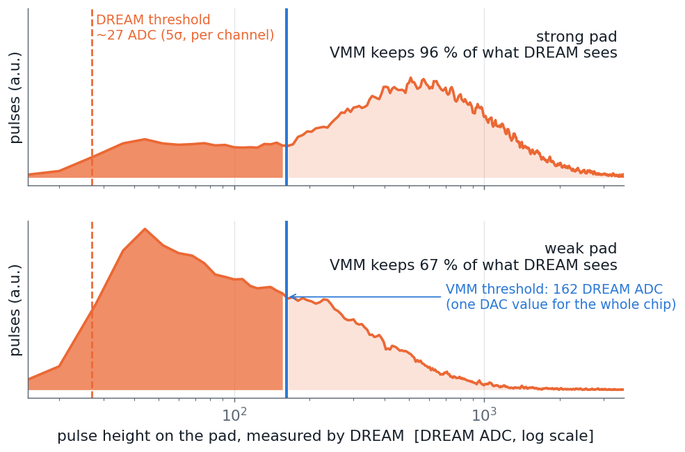
eff_nominal_1. The same blue line costs a high-gain pad 4 %
and a low-gain pad 33 %. This is why the VMM's losses sit in one place (the low-gain corner) rather than being spread evenly.Written as a formula, for every pad:
VMM efficiency(pad) = DREAM efficiency(pad) × [ fraction of that pad's DREAM spectrum above T ]
There is only one unknown, the threshold T, expressed in DREAM ADC so it can be laid over the DREAM spectra. Everything else in the formula is measured.
1Fit T once (what the existing slide already shows)
- Question
- Is there a single T that turns DREAM's 53 per-pad spectra into the VMM's 53 per-pad efficiencies?
- Data
- DREAM
eff_nominal_1(27 Jul, 1.87 M tracks) and VMMrun_46(1 Aug, gain 4.5 mV/fC, all six P2_OUT chips at sdt 224, 0.85 M tracks). Same HV and gas. - Method
- Try every T from 4 to 400, compute the predicted efficiency on every pad, keep the T with the smallest track-weighted residual.
- Result
- T = 162 DREAM ADC (range 145–178). Predicted 85.5 %, measured 85.3 %, pad-by-pad r = 0.90.
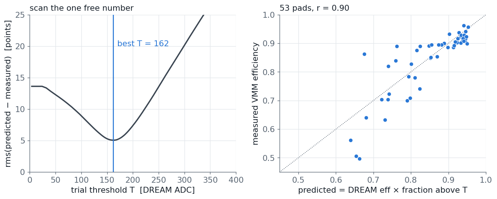
The logic of steps 2–4
Every setting we can change acts on the same quantity: signal ÷ threshold. The theory makes a specific, numerical prediction for each one:
Tests 2 and 3 change the electronics and leave the chamber alone. Test 4 changes the chamber and leaves the electronics alone.
All the VMM efficiencies come from the uRWELL-matched, per-pad tables on EOS
(vmm/matching/efficiency_v2/), and every chip setting was read from the configuration files archived next to each run,
not from the run names or the comments inside those files.
2Lower the VMM amplifier gain
- Question
- If the chamber and the DAC stay the same and the VMM amplifier gain goes from 4.5 to 3.0 mV/fC, each pulse is 1.5× smaller in mV while the threshold in mV is unchanged. Measured in charge, the threshold therefore rises by 1.5×. Do the data show that?
- Data
- Two pairs of runs taken about 40–70 min apart on 1 Aug, all at sdt 230:
run_48(4.5) →run_43(3.0) andrun_52(4.5) →run_50(3.0). VMM 19's pads are left out here because that chip was at a different setting in the 4.5 runs (see step 3). - Method
- (a) Fit T on each run separately and compare the two values. (b) A real prediction: take T from the 4.5 run, multiply by 1.5, and predict the 3.0 run without any fitting.
| pair | T at 4.5 | T at 3.0 (free fit) | ratio (theory: 1.50) | predicted at 3.0, no fit | measured at 3.0 | per-pad r |
|---|---|---|---|---|---|---|
| run_48 → run_43 | 186 | 265 | 1.42 (1.20–1.69) | 0.704 | 0.719 | 0.94 |
| run_52 → run_50 | 188 | 271 | 1.44 (1.22–1.70) | 0.698 | 0.710 | 0.94 |
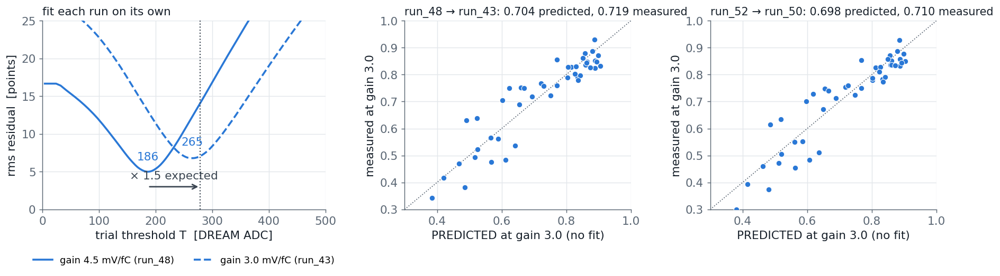
Reading. The threshold moves by the factor the electronics require, and the pattern of which pads lose most is predicted correctly (r = 0.94). The prediction comes out about 1.5 points low, i.e. the measured ratio is slightly below 1.5. That would be the case if the threshold is not exactly proportional to 1/gain (for example, a small baseline shift between gain settings). It is inside the uncertainty band.
3A natural experiment: one chip's threshold raised, the others nearly unchanged
- Question
- If the threshold of a single chip is raised, do only that chip's pads lose efficiency?
- Data
- The config files show that between
run_46andrun_48(both at gain 4.5, 72 min apart), VMM 16–18 went from sdt 224 to 230, and VMM 19 alone went from 224 to 265. Nothing else differs. - Method
- Fit T separately for each chip's pads, in each run.
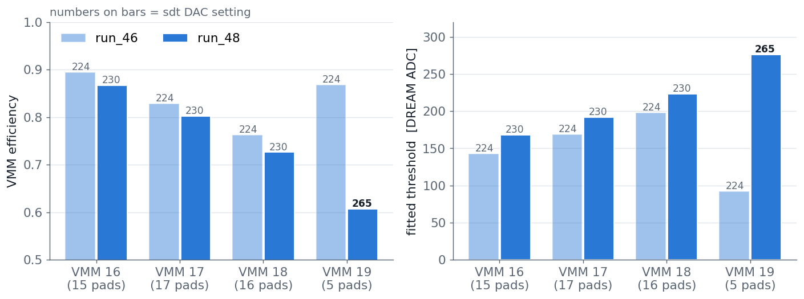
- VMM 19: threshold 92 → 276 DREAM ADC, efficiency 0.868 → 0.607.
- VMM 16–18: thresholds up by 23–25 ADC, efficiency down by 3–4 points.
- Same conversion on both: VMM 19 gives 184 ADC / 41 DAC counts ≈ 4.5 ADC per count; the others give ~24 ADC / 6 counts ≈ 4 ADC per count.
Reading. This is the most direct test. The beam, the chamber, the trigger and the reconstruction are the same for all four chips, yet the efficiency drop follows the one chip whose threshold was raised, and by the right amount. Anything that acts on the whole station (dead time, the coincidence window, the detector) cannot single out 5 pads.
4Lower the chamber gain instead (mesh HV scan)
- Question
- If the electronics stay fixed and the mesh voltage is lowered, the chamber gives less charge and the whole spectrum slides to the left, under a threshold that does not move. Does one fixed level reproduce the VMM's curve at every voltage?
- Data
- VMM mesh scan
run_32(31 Jul, mesh 450 → 390 V). DREAM's own mesh scan of the same chamber,beam_nominal_meshscan_1, which gives a measured DREAM spectrum and DREAM efficiency at each of the same seven voltages. - Method
- Fit T at 450 V only. Then cut DREAM's spectrum at 440, 430, … 390 V at that same T. No gain model and no extrapolation: the real spectrum measured at each voltage is used.
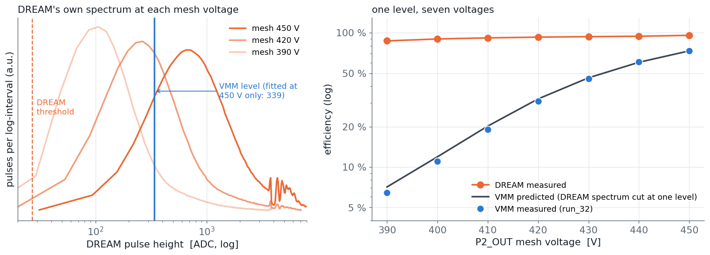
| mesh [V] | 450 | 440 | 430 | 420 | 410 | 400 | 390 |
|---|---|---|---|---|---|---|---|
| VMM measured | 0.734 | 0.605 | 0.456 | 0.310 | 0.191 | 0.111 | 0.064 |
| VMM predicted | fit | 0.603 | 0.462 | 0.322 | 0.202 | 0.119 | 0.071 |
| DREAM measured | 0.958 | 0.943 | 0.936 | 0.928 | 0.917 | 0.900 | 0.871 |
Reading. One level fixed at 450 V follows the VMM through a factor-11 drop in efficiency, to within about 1 point.
The second VMM mesh scan (run_55/56, 1 Aug) matches to within about 2 points. The same chamber, read by DREAM, still
records 87 % of tracks at 390 V. So the chamber is still producing signals; they are just below the VMM's level.
The threshold comes out as 339 here, not 162, because this DREAM product measures cluster amplitude on a different scale from the per-pad spectra in steps 1–3. Each test only uses ratios within its own scale, so this does not matter.
5What does not fit "one threshold"
- The chips do not share one level. In
run_46all six P2_OUT chips were at sdt 224, yet the fitted levels (Figure 4, light bars) are 143 / 169 / 198 / 92 DREAM ADC on VMM 16 / 17 / 18 / 19. Half of the pad-to-pad scatter of the per-pad thresholds is between chips. The same DAC value gives different effective thresholds on different chips. This is what the VMM's per-channel threshold trim exists for, and it was never used in this campaign. - The fit drifts from day to day. At gain 3.0 the fitted level is 252 on 31 Jul (
run_32) and 286 on the afternoon of 1 Aug (run_55), about 13 % apart. This is the known 24-hour drift of the VMM efficiency, seen as a drift of signal relative to threshold. Whether the chamber gain or the electronics moved is not established. - No pulse-by-pulse test is possible. DREAM never read P2_OUT during a VMM run (in those runs it read only the uRWELL), so "the same pulse fires DREAM but not the VMM" cannot be checked pulse by pulse. All the evidence above is statistical, across runs and pads.
- A trap with the gain slope. If you estimate the chamber's gain-vs-HV slope from DREAM's fitted most probable value, you get about 22 V per factor e, and a pure rescaling of one spectrum then disagrees with the VMM mesh scan. DREAM's medians and other quantiles give about 29–31 V, which agrees with the VMM. Step 4 avoids the question by using DREAM's measured spectrum at every voltage.
Already ruled out earlier (August autopsy): the coincidence time window (widening it 3σ → 20σ gains only 0.4 points), beam rate, dead time, position in the spill, geometry and channel mapping, track quality, and the VMM ADC's code-width non-uniformity (the comparator acts before the ADC).
Summary
| test | what changed | theory predicts | data |
|---|---|---|---|
| 1 · fit | nothing (calibration) | one T fits all pads | T = 162, r = 0.90, 85.5 vs 85.3 % |
| 2 · amplifier gain | 4.5 → 3.0 mV/fC | T × 1.50 | T × 1.42 / 1.44; predicted 0.70 vs measured 0.71–0.72 |
| 3 · one chip's DAC | VMM 19: 224 → 265 | loss only on VMM 19 | VMM 19 −26 pts, others −3 pts; ~4–4.5 ADC per DAC count on both |
| 4 · mesh HV | 450 → 390 V | DREAM spectrum cut at a fixed T | 7 points within ~1 pt, across 0.73 → 0.06 |
| caveat | — | same DAC = same level | no: chips differ by up to 2× at sdt 224 |
Conclusion. The VMM inefficiency on P2_OUT behaves exactly like a discriminator set too high for the signal. It responds to the VMM gain, to one chip's DAC and to the chamber HV in the way the theory predicts, and the model works from DREAM's own measured spectra. The practical consequences: equalise the chips with the per-channel trim, then lower the global threshold, or equivalently raise the signal. The model estimates that about 3.4× more signal over threshold would reach DREAM's 95 %.
Part 2 · What the threshold numbers mean, and how low we can go
Part 1 gave the threshold as "T DREAM ADC": a way of saying where the VMM's cut falls inside the signal, measured with DREAM's ruler.
This part translates it into the units on the VMM side: the sdt value in the config file, millivolts, VMM ADC counts and
charge in fC. It then looks at the noise, which sets how low the threshold can go.
AWhat sdt is
Each VMM channel has a preamplifier and shaper. A charge Q on the pad becomes a voltage bump of height
gain × Q (3.0 or 4.5 mV per fC here), sitting on top of a DC level called the baseline, around 170 mV.
A comparator checks whether the bump rises above a reference voltage. That reference is the threshold, and it is
produced by a 10-bit DAC whose setting is sdt. There is one sdt per chip, shared by all 64 channels.
If the bump never crosses it, the channel records nothing. If it does, the chip records the time and digitises the peak,
which gives the VMM ADC value.
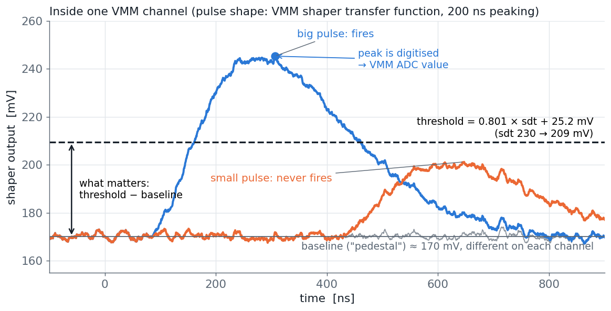
data/VMM-electronics-techinical-info, 200 ns peaking); the amplitudes are illustrative. The only quantity that matters is the
gap between the threshold line and the baseline. Raising sdt raises the line. Raising the gain makes the bumps taller.The config file writes sdt as two numbers, because the 10-bit value is split across two registers:
sdt = (bank1spi2 value) × 64 + (bank1spi1 value) → e.g. spi2 = 3, spi1 = 38 → sdt = 230
Default value. The base configuration
(vmm_daplxa:/local/p2/p2testbench/TestBenchCERN/config_base/p2b-config-cern-base.yaml) sets sdt = 4 × 64 + 44 = 300
on every chip, gain sg = 2 (3.0 mV/fC) and the trim sd = 0 on all 64 × 20 channels. The _deflt
configs only comment out the sdt lines, so those runs ran at 300. That matches the ~290–300 I inferred from the ADC edges before having this file.
The _opt values (224 / 230 / 265) come from the bench noise scan in section D.
BOne number in four units
Where each number comes from:
- DAC → mV. The VMM slow-control code (
vmmsc/src/calibration_module.cpp) uses threshold [mV] = 0.801 × sdt + 25.2. This is the nominal chip curve, not measured on our chips. - DAC → ADC, measured. The lowest ADC a chip records (its "edge") moves by 0.85–0.95 ADC per sdt count (Figure 8, left): VMM 19 from 224 → 265, the other chips 224 → 230 → 300. At one sdt the edge is the same at 3.0 and 4.5 mV/fC, and it does not move during a mesh-HV scan. The threshold is a fixed voltage, and the ADC reads absolute voltage.
- ADC → mV, independently. The November 2025 pulser calibration on the same hardware (
Offline_ADC_091630.csv) gives 3.2 ADC per fC at 3 mV/fC, i.e. 1.07 ADC per mV. The DAC route gives 0.9 / 0.8 = 1.12. The two agree to 5 %. - Baseline in ADC. Extrapolating each chip's edge against the threshold fitted in Part 1 gives an intercept of 38 ADC (Figure 8, right, r = 0.975). The November sub-threshold neighbour hits, which sample the baseline directly, peak at 40–50 ADC (SNR analysis report, "noise pedestal stability").
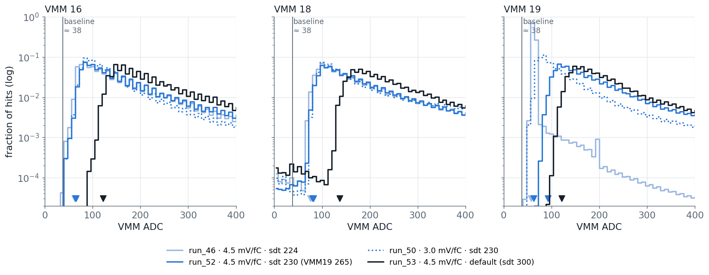
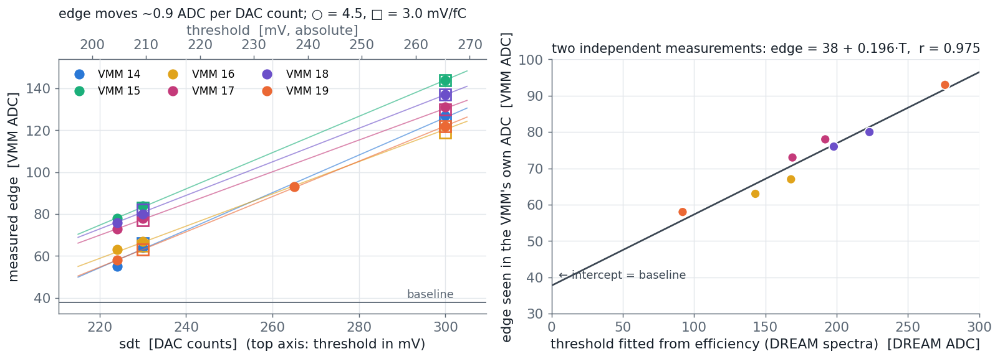
Why the chips differ. The DAC sets an absolute voltage, but every chip, and every channel, has its own baseline. At sdt 230 the gap between threshold and baseline is 26 / 45 / 28 / 39 / 43 ADC on VMM 14 / 15 / 16 / 17 / 18 (VMM 19 at sdt 265: 55). In charge at 4.5 mV/fC that is roughly 5.5 to 11 fC. The same config value lands at very different places on different chips.
CHow this sets the efficiency
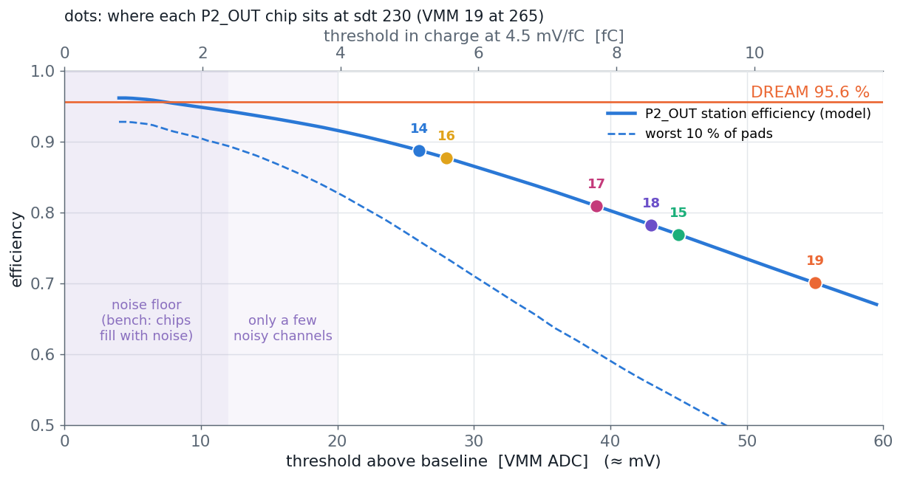
| threshold above baseline (4.5 mV/fC) | 45 ADC | 30 ADC | 25 ADC | 20 ADC | 15 ADC | 10 ADC |
|---|---|---|---|---|---|---|
| in charge | 9.3 fC | 6.2 fC | 5.2 fC | 4.1 fC | 3.1 fC | 2.1 fC |
| station efficiency | 77 % | 87 % | 89 % | 92 % | 93 % | 95 % |
| worst 10 % of pads | 54 % | 71 % | 77 % | 83 % | 87 % | 91 % |
DThe noise floor, measured on the bench
On 29–30 July, with no beam, a threshold scan was taken on the VMM DAQ machine (TestBenchCERN/vmm_thr_scan.sh):
sdt from 300 down to 210 in steps of 5, at 3.0 and 4.5 mV/fC, 200 packets each. Every hit in it is noise.
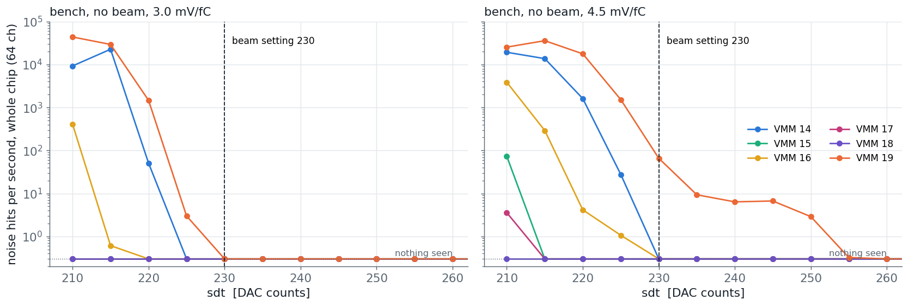
- The noise is concentrated in a few channels. On VMM 14 at sdt 220, two channels (34, 51) carry all its noise. On VMM 19 at 225 (4.5 mV/fC), three channels (20, 36, 1) carry 98 %. Most channels are quiet several DAC counts below where the chip as a whole becomes noisy. A few steps lower it spreads to tens of channels; Part 3 follows it channel by channel.
- In ADC terms the chips fill with noise once the threshold comes within roughly 10–20 ADC of the baseline (≈ 2–4 fC at 4.5 mV/fC). The November neighbour-triggered runs give a baseline width of σ ≈ 5–12 ADC per channel (most 5–8), so this is the usual 2–4 σ.
- The beam data agree. VMM 19 at sdt 224 in run_46 recorded 284 M hits, against 2–5 M on the other chips: the bench says 225 is that chip's noise edge.
- Gain does not buy much signal-to-noise. The bench onset shift between gains, and the November SNR heatmap (MPV / σ roughly flat from 3.0 to 6.0 mV/fC on the P2 large detector), both say the noise grows almost as fast as the signal. Higher gain mainly makes the fixed-mV effects, such as chip-to-chip baseline offsets and DAC steps, smaller in charge. It also costs ADC range: 4–5 % of hits already saturate at 4.5 mV/fC, and about 10 % would at 9.
ECan the far, beam-free pads define the noise floor?
In principle yes, if they really see no particles. In this beam they do not qualify:
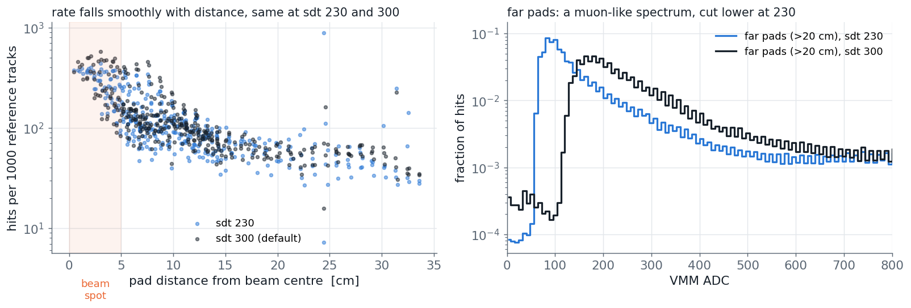
The H4 muon beam has a wide halo, so even the edge of a 50 cm chamber sees real particles. Cleaner in-situ noise references are:
- Between spills. The SPS spill structure gives ~10 s of beam-off every cycle. Hits in those gaps are noise on every channel, the beam
channels included. The November pipeline already builds this spill mask (
SNR_Analysis/vmm_trigger_analysis.py), and the July runs with hit columns (run_43, 50, 52, …) would support it. - Neighbour-triggered sub-threshold hits (
sng = 1, as in November). These give each channel's baseline and σ directly in ADC. - The bench scan in D, which needs no beam at all.
FThe proposed scheme: low global threshold, trim per channel, mask what is left
The idea: set each chip's global threshold for its clean channels, raise the few noisy channels with the per-channel trim, and mask a channel only if even the trim cannot quiet it. The hardware supports this, and the slow control already has the routine.
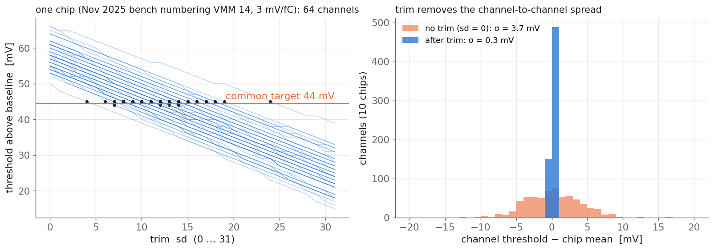
vmmsc threshold calibration,
_install/data/20251103/.../Threshold_093415.csv, 10 chips). Left: each line is one channel; increasing the 5-bit trim
sd from 0 to 31 lowers that channel's threshold by 1.1 mV per step (≈ 34 mV in total). Untrimmed, the 64 channels of a chip
spread with σ ≈ 3.7 mV (15–20 mV peak to peak). Trimmed to a common target, σ ≈ 0.3 mV.What it would buy on P2_OUT. At a common 20 ADC above baseline (≈ 18 mV, ≈ 4 fC at 4.5 mV/fC) the model gives ~92 %, against 85 % now; at 15 ADC, ~93 %. In sdt terms, with each chip's baseline estimated from its edges (VMM 14 / 15 / 16 / 17 / 18 / 19 ≈ 201 / 180 / 199 / 187 / 182 / 203), "20 ADC above baseline" means roughly sdt 223 / 202 / 221 / 209 / 204 / 225 before trimming. The bench says that is close to the noise edge for VMM 14, 16 and 19, where the trim and a few masked channels would have to do the work. VMM 15, 17 and 18 were never scanned that low.
Part 3 · How far down, and what masking costs: the 29–30 July threshold scan, channel by channel
Part 2 used the bench scan only chip by chip. Here every one of the 384 P2_OUT channels gets its own noise turn-on. Combined with the efficiency model, that gives the trade-off directly: lower the threshold, more of the signal gets through, but more channels turn noisy and have to be raised or masked. The goal is the point where the two balance.
GWhich channel is noisy at which threshold
The scan (vmm_thr_scan.sh) stepped every chip together from sdt 300 down to 210, five counts per step, taking 200 UDP packets per point.
That is about 2 s and ~300 k hits per point. The 3.0 mV/fC pass ran on 29 July at 17:15, during the MD with no beam. The 4.5 mV/fC pass ran on 30 July at 09:31.
In the 4.5 pass P2_OUT records nothing at all from sdt 235 upwards, so no beam particles reached it. Every hit below is noise. I call a channel noisy above
10 Hz, which is 20 hits in the capture.
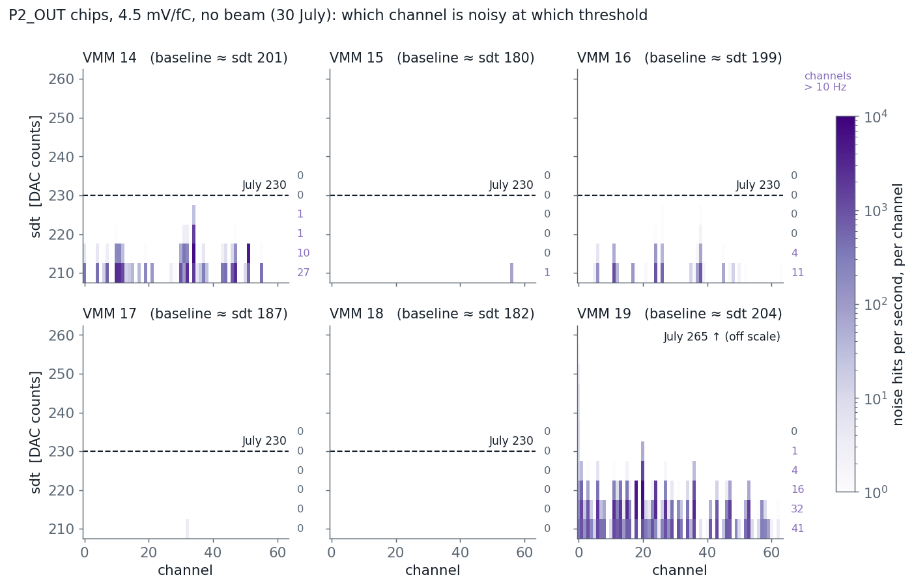
- The noise turns on channel by channel, not all at once. At sdt 225 one or a few channels on a chip are noisy, and that is the "1–3 channels" picture of Part 2. Five counts lower, ten or more are. On VMM 19 the count goes 1 → 4 → 16 → 32 → 41 from 230 down to 210.
- The turn-on follows each chip's baseline. VMM 14, 16 and 19 sit with their baseline at sdt ≈ 200 and turn on at 215–225, which is about 15–25 counts above baseline (≈ 13–22 VMM ADC, ≈ 3–4 fC). VMM 15, 17 and 18 have their baseline 15–20 counts lower, so at 210 they are still 23–30 counts above it and silent. Their noise edge lies below the scan.
- The worst offenders are always the same channels. VMM 19 ch 20 is noisy up to 230. ch 0 shows occasional bursts up to 255 that never last. VMM 14 ch 34 is noisy up to 225.
HIs a bench scan a valid map of the beam?
The scan took 2 s per point, without beam, a day before the threshold runs. Before building on it, it should be checked against the beam. Run_46 ran with almost every chip at sdt 224, which is next to the scan's 225 step.
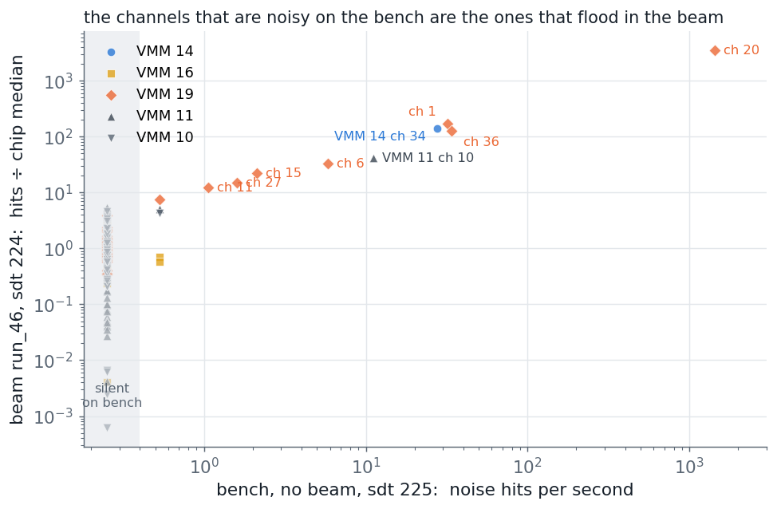
The match is channel for channel. On VMM 19, ch 20 recorded 3,500× the median in the beam and is the hottest channel on the bench. The next ones in the beam (ch 1, 36, 6, 15, 27, 11) are the next ones on the bench, in the same order. VMM 14 ch 34 (141×) and VMM 11 ch 10 (42×) are the only noisy channels of their chips on the bench too. No channel that is silent on the bench goes above 5× its chip's median in the beam. So the 2-second bench scan predicts which channels flood in the beam, and it can be used to decide what to raise or mask.
The same comparison with only the hits between spills
Figure 14 counts every hit of the run, signal included. To compare noise with noise, I decoded all 48 captures of run_46 from the raw pcapng
(1 Aug, 04:53–05:28, 1.52 × 109 hits, the same total as the summed counts.npz) and binned each channel's hits in 0.1 s steps.
The DREAM trigger fanned into VMM 0 ch 44 marks the spills: 4.8 s of beam every 14.4 s, and nothing on that channel in between.
"Between spills" means every 0.1 s bin at least 0.5 s away from a spill bin: 1251 s of the run, against 669 s at full spill intensity.
For each chip, the bench rate is taken at the scanned sdt nearest to its run_46 setting (225 for the chips at 224).
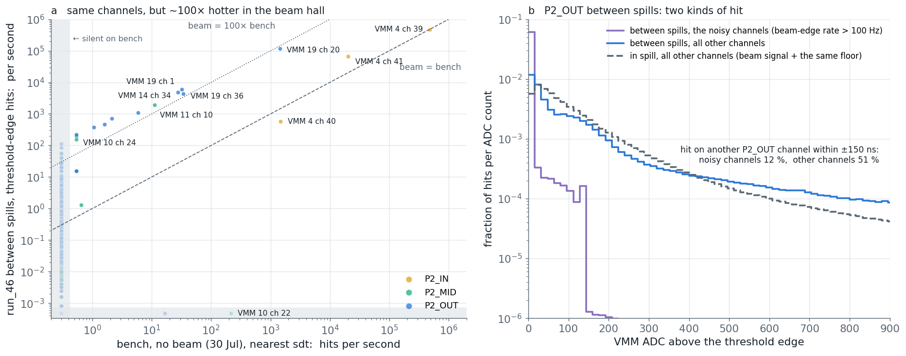
Between spills there are two different kinds of hit.
- The noisy channels, at the threshold edge. Their hits pile up in the first 16 ADC above the edge and only 12 % have another P2_OUT hit within ±150 ns: electronics noise. They are the same channels as on the bench: 8 of the 10 channels above 10 Hz on the bench are hot between spills too. (Of the other two, VMM 10 ch 22 has no hit at all in run_46, spill included, so it was dead or disconnected that day, and VMM 19 ch 0, 16 Hz on the bench, is quiet between spills.) But they are about 100× hotter in the beam hall: VMM 19 ch 20 1.4 kHz on the bench → 120 kHz; VMM 14 ch 34 28 Hz → 4.8 kHz; VMM 11 ch 10 11 Hz → 2.0 kHz. The bench reaches these rates only at sdt 215–220, so in the beam hall the noise behaves as if the threshold were 5–10 DAC counts lower than on the bench. That is also why 8 channels that were nearly quiet on the bench at 225 are above 100 Hz between spills (VMM 19 ch 3, 6, 11, 15, 27, 47; VMM 10 ch 24; VMM 11 ch 33): all of them are noisy on the bench at 215–220. The walking-burst VMM 4 is the exception: its ch 39 runs at the same ≈ 0.48 MHz in both places at sdt 300.
- A floor on every channel that is not noise. Median channel between spills: P2_OUT 7.7 Hz, P2_MID 1.5 Hz, P2_IN 0.4 Hz. It is flat from 0.5 s to 10 s after the spill, it is spread evenly over the pads (rank correlation with the beam profile ≈ 0), its ADC spectrum is the same shape as the in-spill hits and runs to the top of the range, and 51 % of these hits have a partner on another P2_OUT channel within ±150 ns. Those are real ionising particles, not electronics. The bench saw none of it on 30 July, when ≈ 15 hits per channel per point would have been visible, so it comes with beam operation. Something that is radioactive while the beam runs, near P2_OUT, is my guess, but this data cannot say what. It does not matter for the efficiency: masking would not remove it, since it is on every pad, and at 8 Hz per pad it hardly ever lands inside a 200 ns matching window.
IThe trade-off, chip by chip, with only the global threshold and masks
This option needs no new calibration: it uses only the per-chip sdt and the per-channel mask bit (sm). For each chip and each scan step,
I mask every channel that is noisy there. The chip's efficiency is then the signal efficiency at that threshold, from the DREAM-spectrum model of
Part 1, times the fraction of channels left unmasked.
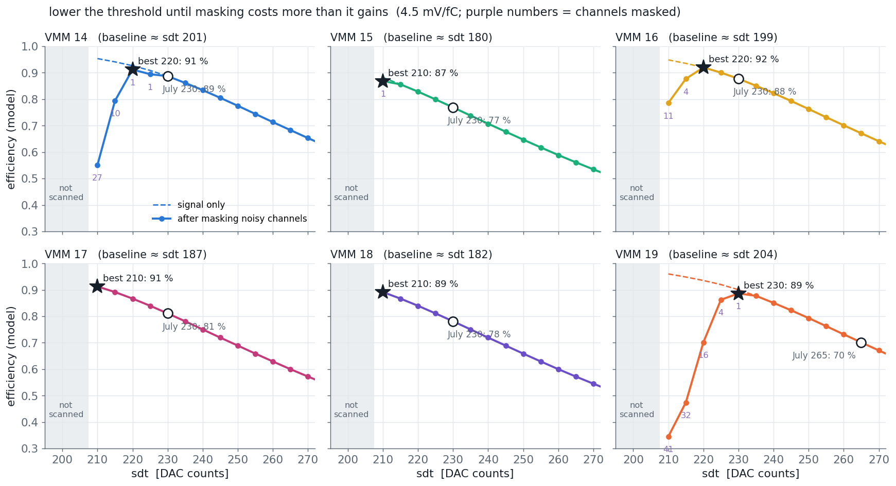
For VMM 14, 16 and 19, the two curves stay together while only one or two channels are masked. Then they separate sharply: one step lower, ten or more channels go. So the optimum is sharp, and it sits one step above where the chip starts to fill with noise. VMM 15, 17 and 18 are still improving at 210, the bottom of the scan.
| chip | baseline (sdt) | July sdt | best measured sdt | channels to mask | model eff. July → best |
|---|---|---|---|---|---|
| VMM 14 | ≈ 201 | 230 | 220 | 1 (ch 34) | 89 % → 91 % |
| VMM 15 | ≈ 180 | 230 | ≤ 210 | 1 (ch 56) | 77 % → 87 % |
| VMM 16 | ≈ 199 | 230 | 220 | 0 | 88 % → 92 % |
| VMM 17 | ≈ 187 | 230 | ≤ 210 | 0 | 81 % → 91 % |
| VMM 18 | ≈ 182 | 230 | ≤ 210 | 0 | 78 % → 89 % |
| VMM 19 | ≈ 204 | 265 | 230 | 1 (ch 20) | 70 % → 89 % |
| P2_OUT (beam-weighted) | 3 of 384 | 83.7 % → 91.2 % |
For July the model gives 83.7 %, against the 85.3 % measured, so it runs about 1.5 points low. The step that counts is the predicted +7.5 points, for three masked channels and no new calibration. Two checks on it:
- The noise cut. At 100 Hz the best steps move down by at most one step, to 91.9 %. At 1 Hz, which is only two hits in a 2 s capture, VMM 14 and 16 move one step up and two masked channels fall in the beam spot, giving 87.8 %. The choice of cut is worth about ±2 points. A longer capture would settle it (see L).
- Gain. The same exercise at 3.0 mV/fC gives a best of 87.7 %. The noise turns on about one step lower, but the signal is 1.5× smaller in the same units. So stay at 4.5 mV/fC.
JWhat the trim adds
With a trim calibration, each channel can sit at its own threshold, which is the scheme from F. Every clean channel goes to a common target above its own baseline. Each noisy channel is raised only as far as it needs: to the first step where the bench shows it quiet. Nothing has to be masked unless the trim runs out of range, about 42 DAC counts, and no P2_OUT channel needs more than 30.
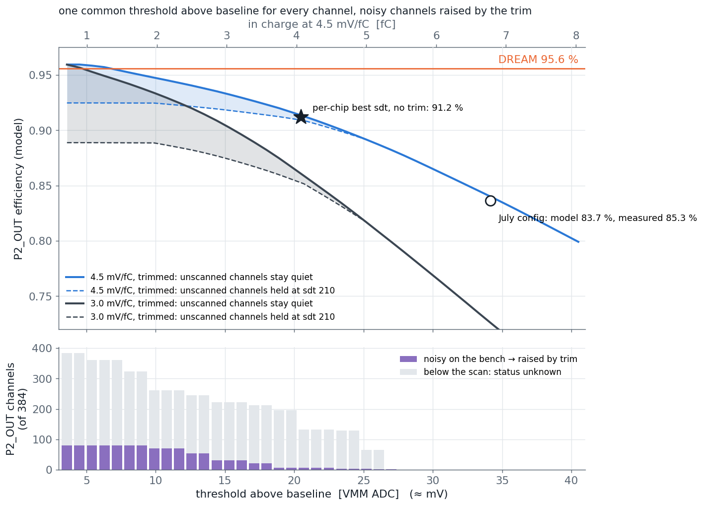
| target above baseline | ≈ fC at 4.5 mV/fC | channels raised (known) | P2_OUT efficiency, 4.5 mV/fC | same, 3.0 mV/fC |
|---|---|---|---|---|
| 22 ADC (25 DAC) | 4.5 | 6 | 90 % | 84 % |
| 18 ADC (20 DAC) | 3.6 | 22 | 91–92 % | 86–88 % |
| 13.5 ADC (15 DAC) | 2.7 | 54 | 92–94 % | 88–91 % |
| 9 ADC (10 DAC) | 1.8 | 80+ | 92.5–95 % | 89–94 % |
- Down to about 20 ADC, the trim adds little over masking. The no-trim optimum (91.2 %, the star) already sits on the curve.
- Below that, the trim is what makes going lower possible. Without it, dozens of channels per chip would have to be masked, as the left side of Figure 15 shows. With it, each noisy channel just keeps a slightly higher threshold. At 13.5 ADC (≈ 2.7 fC) the model gives 92–94 %, and at 9 ADC 92.5–95 %.
- The width of the band is the unmeasured part. Whether DREAM's 95.6 % can be matched depends on how the channels that were never scanned below sdt 210 behave between 5 and 20 ADC above their baseline. Part 2 estimated σ ≈ 5–8 ADC for most channels, which puts the edge at 3σ ≈ 15–25 ADC. On that estimate, the realistic floor is the 13–18 ADC row: about 92–93 %.
KThe other two stations
The same scan covers P2_IN (VMM 2–7) and P2_MID (VMM 8–13). The July "opt" config (runs 48, 52, 66) had already raised exactly the chips this scan flags: VMM 4 and 9 to 300, 7 to 285, 12 to 255, 5 to 245. That is evidently where it came from. Channels above 10 Hz at 4.5 mV/fC:
| chip | station | July sdt | @210 | @220 | @230 | @240 | @250 | best measured (≤ 2 masked) | note |
|---|---|---|---|---|---|---|---|---|---|
| VMM 2 | IN | 230 | 5 | 0 | 0 | 0 | 0 | 215 | |
| VMM 3 | IN | 230 | 0 | 0 | 0 | 0 | 0 | ≤ 210 | |
| VMM 4 | IN | 300 | 7 | 5 | 5 | 4 | 3 | none | walking burst |
| VMM 5 | IN | 245 | 46 | 15 | 1 | 1 | 0 | 230 (mask ch 46) | whole chip |
| VMM 6 | IN | 230 | 0 | 0 | 0 | 0 | 0 | ? | ADC edge ≈ 10: check |
| VMM 7 | IN | 285 | 6 | 3 | 2 | 2 | 1 | 230 (mask 24, 25) | walking burst |
| VMM 8 | MID | 230 | 4 | 0 | 0 | 0 | 0 | 215 | |
| VMM 9 | MID | 300 | 15 | 13 | 12 | 12 | 10 | none | walking burst |
| VMM 10 | MID | 230 | 26 | 4 | 0 | 0 | 0 | 225 (mask ch 22) | |
| VMM 11 | MID | 230 | 24 | 4 | 0 | 0 | 0 | 225 (mask ch 10) | |
| VMM 12 | MID | 255 | 64 | 53 | 14 | 4 | 0 | 245 | whole chip |
| VMM 13 | MID | 230 | 1 | 0 | 0 | 0 | 0 | ≤ 210 |
- Most chips behave like P2_OUT. They can come down 5–20 counts from the July setting for a mask or two.
- VMM 12 and VMM 5 are noisy as whole chips. At 220, 53 of VMM 12's 64 channels are above 10 Hz. Per-channel masking cannot fix that; it is the chip's global level, or a board-level noise source, and these chips have to stay higher.
- VMM 4, 7 and 9 have a different problem, a "walking burst". At any one step, one to three channels fire at 1–100 kHz, and even at sdt 300 there is no quiet step. Which channels they are changes from step to step, moving along neighbouring channels (VMM 7: ch 23 → 24 → 25; VMM 9: 20 → 27 → 32 → 25 → 56). It also differs between the two days. That does not depend on threshold, so it is not threshold noise, and a static mask list cannot catch it. Chambers sparking during the week, or a hybrid-level oscillation, would both look like this; the time structure of those hits would tell them apart.
The same plot as Figure 15, for the other two stations:
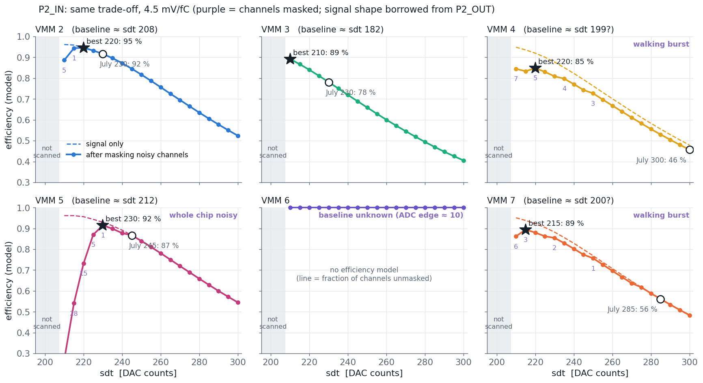
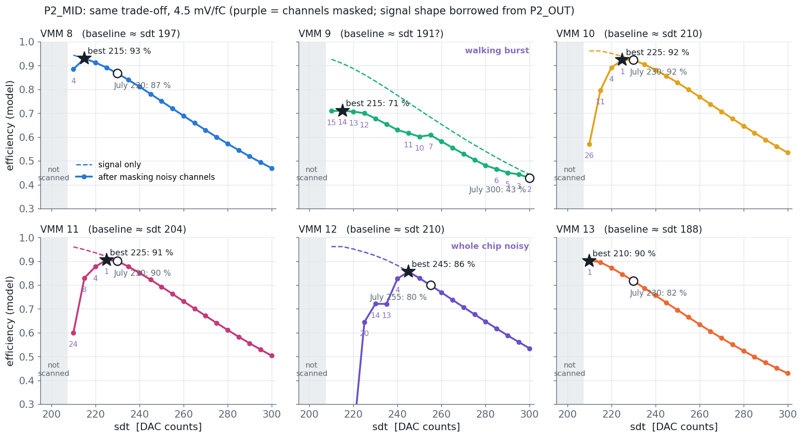
All 18 chips at a glance
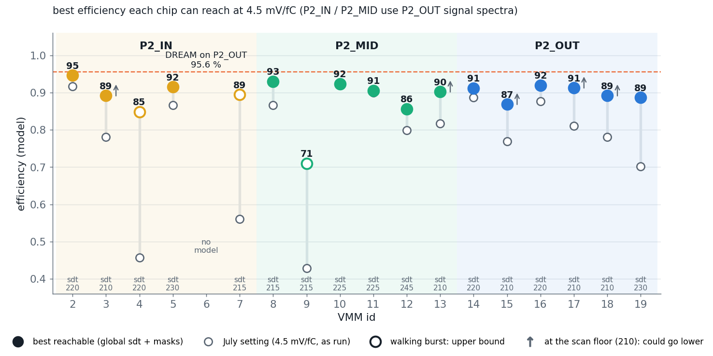
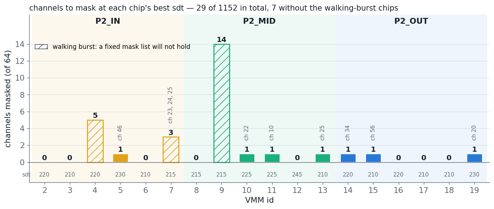
The same summary at 3.0 mV/fC, and why 4.5 is the default
The bench scan was taken at both gains (29 July at 3.0, 30 July at 4.5), so the same analysis runs on the 3.0 scan unchanged. Only the gain in the signal model changes: at 3.0 mV/fC one DAC count above baseline corresponds to 1.5× more charge, so the same sdt cuts deeper into the signal. The open circles stay the real July operating point (4.5 mV/fC, July sdt), so both figures compare against what actually ran.
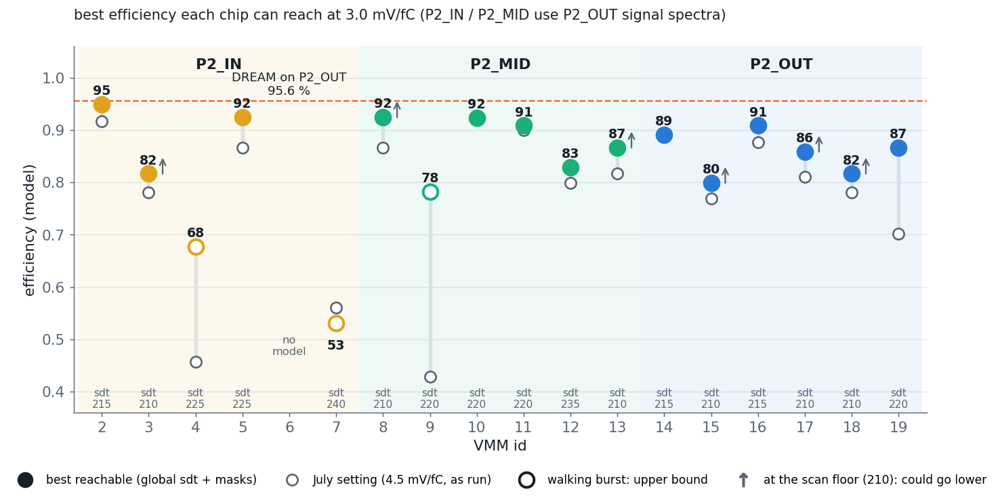
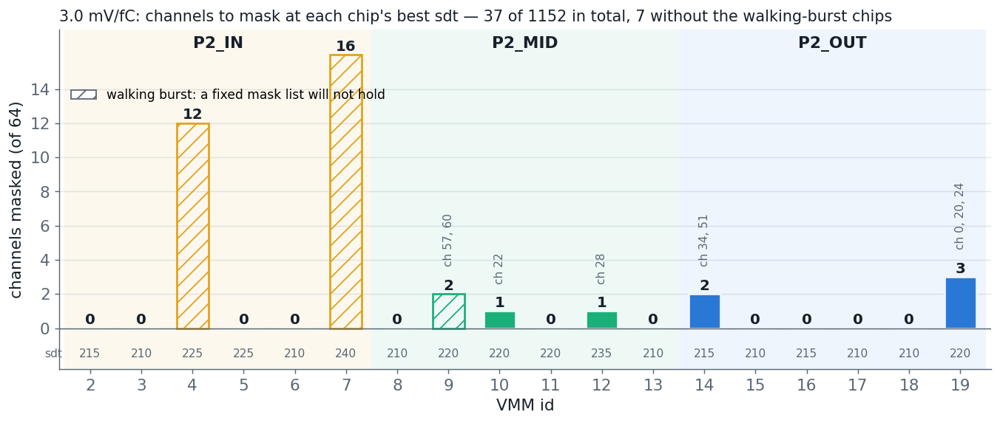
Why 4.5 is the one to use:
- The noise floor in DAC barely moves with gain. Lowering the gain from 4.5 to 3.0 lets each chip go only about 5 DAC lower (210–225 instead of 210–230), while the signal shrinks by a third. So per unit of signal charge the threshold ends up higher at 3.0. The part of the noise that limits us comes from the discriminator and threshold DAC, which do not scale with the preamp gain, so more gain buys real separation.
- Most chips sit at the scan floor at both gains (7 at 3.0, 6 at 4.5), so neither number is final. That penalises 3.0 more: at 3.0 the 210 floor costs more charge.
- Station level: P2_OUT reaches 91.2 % at 4.5 against at most 87.7 % at 3.0 (Section I). The beam ran at 4.5 in July, so 4.5 is also the setting the hot-channel validation (Figure 14) was done at.
- Where 3.0 looks better: VMM 2, 5 and 11 by one point or less, which is within the model's uncertainty, and VMM 9 by 7 points, but VMM 9 is a walking-burst chip and its 3.0 result is just a quieter day.
LWhat to measure next, so the band in Figure 16 collapses
- Extend the same scan down to sdt ≈ 170, in steps of 2–3 counts, at 4.5 mV/fC. Then VMM 15, 17 and 18 get a measured noise edge too. Capture ~20 s per point rather than 200 packets, so that 1 Hz means 20 hits and not 2. With chambers at HV and the beam off, as on 30 July, it takes about an hour.
- Run the vmmsc pedestal and threshold calibration on the P2 hybrids (step 1–2 of the scheme in F). It replaces the inferred chip baselines (±6–8 counts, see Part 4) with measured per-channel ones, and it gives the trims.
- Then rerun this analysis: per channel, threshold = max(target, quiet point). Mask only what the trim cannot reach, and expect a handful of channels on P2_OUT. The scripts are written so that the new scan can be dropped in.
- Repeat the scan in the beam, using only the hits between spills, a few minutes per sdt. run_46 already shows how (Figure 14b): same channels as the bench, but the noise onset is 5–10 DAC higher in the beam hall.
Part 4 · The chip baseline and the threshold, step by step (what the cosmic scan is built on)
Parts 2 and 3 use one number per chip, its baseline, and measure every threshold as a distance d above it. This part shows where that number comes from, how sure it is, and how it sets the cosmic threshold scan.
MWhat the baseline is, and why it has to be inferred
The sdt DAC sets one absolute voltage for the whole chip: 0.801 × sdt + 25.2 mV. Each chip's shaper output, however, rests on its
own DC level, the baseline (pedestal). A pulse fires the chip only if it climbs from that baseline to the threshold. So what matters is the
gap d = sdt − baseline. The sdt value alone is not the threshold: the same 230 is 48 counts above baseline on VMM 18 and only 29 on VMM 14.
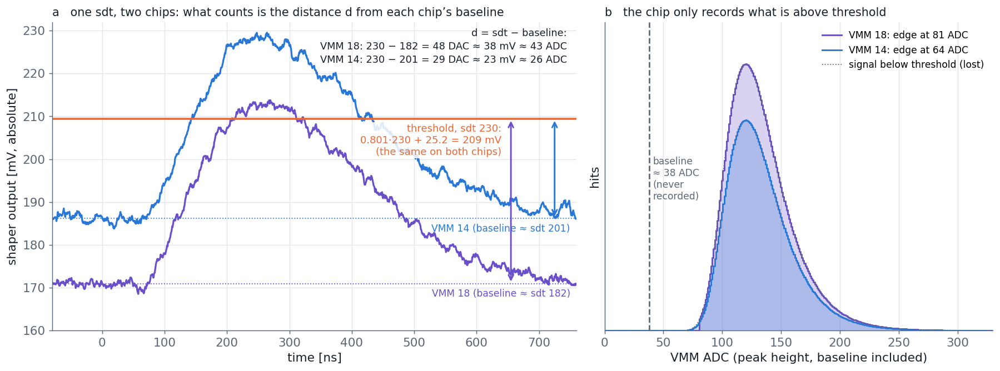
That last point is the reason for the whole construction. In beam data the chip reports only hits above threshold, so its baseline can't be read off directly. It has to be inferred from where the spectrum starts, which is the threshold, and from how that start moves when sdt changes. The direct measurement is the vmmsc pedestal calibration, which was never run on the P2 hybrids. It is now step 1 of the cosmic plan.
NHow the baseline is estimated, chip by chip
Each step, and why it is done this way:
- The edge is the 1 % point of the chip's ADC spectrum, not its lowest value. The spectrum rises sharply at the threshold, so the 1 % point sits on that rise. It is not thrown off by a handful of stray low hits, or by the ADC's every-16th-code wide bins.
- The edge is taken where the chip is not dominated by noise. When the threshold is right on the noise floor, the noise hits pile up at the threshold and drag the 1 % point down. In run_46 (sdt 224), VMM 11's edge is 47 ADC against 60 at sdt 230: 13 ADC for 6 DAC instead of 5. The baselines therefore use only the three runs at the July settings (48, 52, 66), which agree to within 1.6 DAC on every chip.
- One sdt per chip and two calibration constants are enough. The edge moves 0.9 ADC per sdt count on every chip (Figure 8, left), so each chip's edge sits on a line of slope 0.9. Following that line down to the 38 ADC baseline gives the sdt at which the threshold would sit on the baseline. That sdt is the chip's baseline in DAC counts (Figure 20).
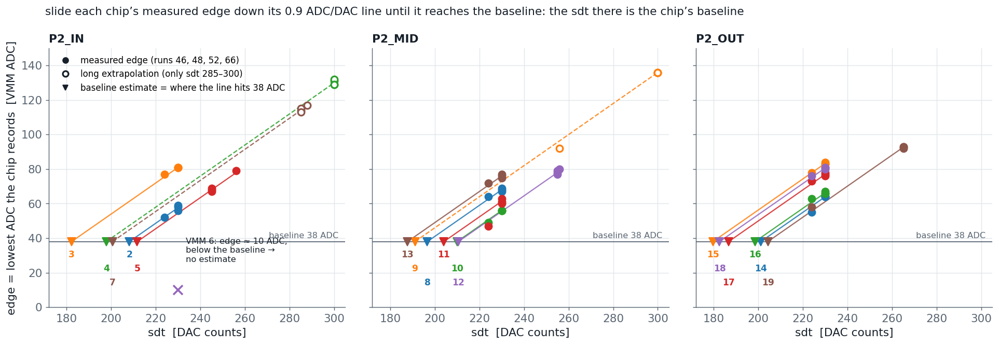
Where the 38 ADC comes from
Step 2 of the recipe subtracts 38 ADC from every chip. This number is not measured on each chip. It comes from one straight-line fit on four P2_OUT chips (VMM 16–19, the ones with pads in the beam), and it is then used for all 18 chips. Here is how that fit works.
The idea: one threshold, two rulers. For VMM 16–19 in runs 46 and 48 we know each chip's threshold twice, in two different units:
- T, in DREAM ADC. In Part 1, for each chip we looked for the cut on the DREAM pad spectra that gives the same efficiency as the VMM measured. That cut is a charge. T = 0 would mean "fire on any charge at all", which is the same as saying the threshold sits exactly on the baseline.
- The edge, in VMM ADC. Where the chip's own ADC spectrum starts. The VMM ADC writes the pulse height with the baseline included, so the edge is "the baseline, plus the threshold charge converted to VMM ADC".
Both describe the same threshold, so they have to be related by a straight line: edge = baseline + k × T. The slope k is just how many VMM ADC counts the VMM gives for one DREAM ADC count of charge, about one for every five. The number we want, the baseline, is where that line crosses T = 0.
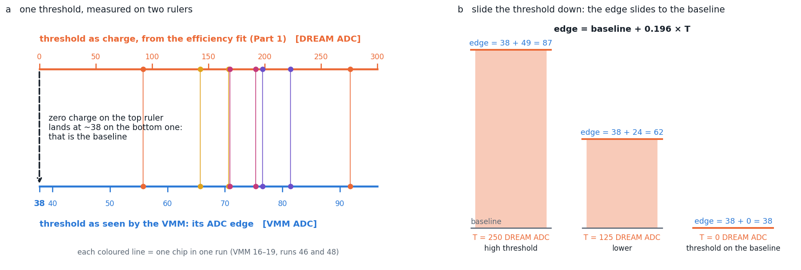
The fit. Plotting edge against T for the eight points and drawing the best straight line gives edge = 37.7 + 0.196 × T, with a correlation of 0.975. So the line hits T = 0 at 37.7 ≈ 38 ADC.
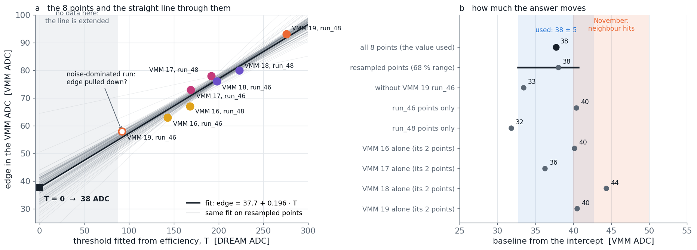
How solid is 38? Repeating the fit in different ways (Figure 24 b):
| fit done on | intercept (ADC) |
|---|---|
| all 8 points (the value used) | 37.7 |
| resampled points, middle 68 % | 33 – 41 |
| without VMM 19 in run_46 | 33.4 |
| run_46 points only / run_48 points only | 40.4 / 31.8 |
| each chip from its own two points (VMM 16 / 17 / 18 / 19) | 40 / 36 / 44 / 40 |
- It is 38 with about ±4–5 ADC of play. That is where the ±5 ADC in section O comes from, and it is the biggest part of the ±6–8 DAC uncertainty on every baseline.
- It leans heavily on VMM 19. Only VMM 19 gives a long lever: its threshold moved from T = 92 (run_46) to T = 276 (run_48, sdt 265). The other three chips have their two points close together, so on their own they pin the line down poorly.
- The lowest point is a suspect one. VMM 19 in run_46 was flooded with noise (284 million hits). Noise hits pile up at the threshold and can pull the edge down. Without that point the intercept drops to ~33.
- An independent hint points slightly higher. In the November 2025 calibration data, the neighbour hits recorded below threshold, which sample the baseline directly, peak at 40–50 ADC. Those are other chambers, but it suggests 38 is, if anything, a little low.
What using one number for every chip hides.
- The fit only tests VMM 16–19. For P2_IN, P2_MID and VMM 14/15 the 38 is an assumption. VMM 6 shows it fails for at least one chip: it records ADC values around 10, well below 38.
- A shared error moves everything together. If the true value is 33 for all chips, every baseline moves by the same 5.6 DAC. All the d values shift together, but the ranking of the chips stays the same.
- A chip-by-chip error does not. If one chip's ADC baseline is 45 instead of 38, its baseline in DAC comes out ~8 DAC too low, so every threshold d we quote for it is ~8 DAC too high. The stand's noise scan, whose onsets spread by ±8 DAC (section P), suggests this is happening on some chips.
How to measure it directly: one short run with neighbour logic on. The VMM has a mode (sng = 1) in which, when a channel fires,
its two neighbours are read out too, even if they are below threshold. Most of the time a neighbour has little or no signal, so its ADC value is simply
that channel's baseline. Collect a few thousand of those per channel and the peak of the distribution is the baseline, read straight off,
with no fit and no assumption. That is how the November 40–50 ADC was obtained.
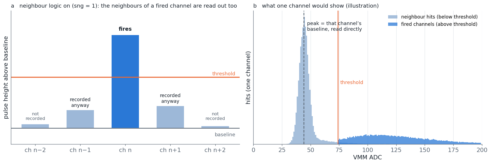
sng = 1 on all detector chips gives a measured ADC baseline
for every channel and replaces the shared 38. Together with the vmmsc pedestals (in mV), it calibrates the whole chain channel by channel:
sdt → mV → VMM ADC. The data rate goes up while it is on, so a short run is enough. It belongs before the cosmic threshold scan.OHow sure the baselines are
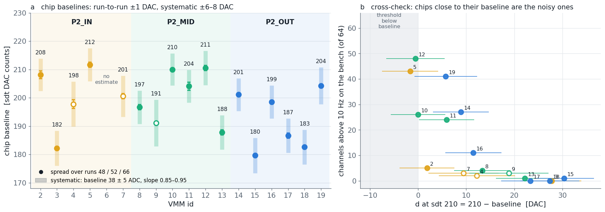
- Statistically the baselines are tight. Run-to-run they agree to ≤ 1.6 DAC.
- The real uncertainty is ±6–8 DAC (±5–7 mV), and it is systematic. It comes from the two shared constants. The 38 ADC was fitted on P2_OUT only; the November sub-threshold neighbour hits put the ADC baseline at 40–50. A different ADC baseline on one chip shifts that chip's baseline by 1.1 DAC per ADC. The long extrapolations (VMM 4, 7, 9) are the least certain.
- A chip baseline is the average of 64 channels. Untrimmed, the channels of one chip spread by σ ≈ 3.7 mV ≈ 4.6 DAC (November trim calibration). So at a given d some channels sit 5–10 DAC closer to their own baseline than the chip does. That is why the noise turns on channel by channel over ~10–15 DAC (Part 3, G), and why trimming helps.
- The bench scan agrees with the ranking (Figure 21 b). The five chips furthest above their baseline at sdt 210 (VMM 3, 13, 15, 17, 18, d = 22–30) are completely quiet. The chips at d ≈ 0–10 (VMM 5, 10, 11, 12, 14, 19) have 24–48 noisy channels. The absolute values are a little off: VMM 5, 10 and 12 come out at d ≈ 0, where every channel should fire, yet only 26–48 of their 64 do, and VMM 2 at d ≈ 2 has only 5. Those baselines are probably a few DAC too high, which is within the systematic band.
PHow this sets the cosmic threshold scan
The cosmic scan running on the three-chamber stand steps every chip down from its own baseline, in d, not in raw sdt.
- A common sdt would be wrong twice. The baselines span sdt 180–212, so a common sdt of 200 is below the baseline of eight chips (VMM 2, 5, 7, 10, 11, 12, 14, 19): they would fire continuously and flood the readout. At the same time it would be 20 counts above baseline on VMM 15.
- In July the chips sat anywhere from d ≈ 20 to d ≈ 110. VMM 10 was at 20; VMM 15, 17 and 18 at 43–50; VMM 19 at 61; VMM 4 and 9 above 100. One config value, very different thresholds.
- The grid. Noise scan d = 50, 40, 34, 30, 27, 24, 22, 20, 18, 16; cosmic scan d = 50, 40, 32, 27, 24, 22, 20, 18. Each chip stops where its own noise scan turns noisy, at around d ≈ 20 (the chip-wide noise floor in July was 17–20 ADC ≈ 19–22 DAC above baseline). VMM 6 starts at sdt 230 and steps down by 5.
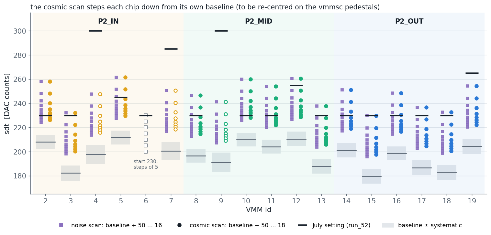
How the measurement closes the loop. vmmsc gives each channel's pedestal in mV; (pedestal − 25.2) / 0.801 turns it into DAC and replaces the inferred chip baselines of Figure 21. The noise scan then shows where each chip and channel really turns on. The cosmic scan measures efficiency against d directly, with tag-and-probe between the three chambers. If the recipe here is right, the measured d at which each chip turns noisy should be about the same on every chip. If not, the scatter shows by how much these baselines were off.
Where everything comes from
- DREAM per-pad spectra and efficiency:
P2_basket_analysis/sps_beam_analysis/dream_vmm_comparison/data/dream_padadc_eff_nominal_1_P2_OUT*; model inthreshold_model.py. - VMM per-pad n / k: EOS
/eos/experiment/ntof/data/x17/p2_sps_july/vmm/matching/efficiency_v2/vmm_eff_<run>_<sub>.json(stations[P2_OUT].per_pad). - Chip settings:
.../vmm/runs/<run>/p2b-config-cern-ext_*.txt, sdt = spi2 × 64 + spi1, gain fieldsg(2 = 3.0, 3 = 4.5 mV/fC). - DREAM mesh scan: LaCie
TB_July2026_H4/analysis/det3/beam_nominal_meshscan_1/, stage 20 (spectra) and stage 22 (tag-and-probe efficiency). - VMM station efficiencies vs conditions:
vmm_dream_matching/efficiency_conditions.csv. - Per-chip VMM ADC spectra for every sub-run: EOS
analysis/vmm/<run>/<sub>/<capture>/counts.npz(keysadc,adc_vs_ch); edge = ADC at 1 % of the chip's spectrum. - Out-of-spill comparison (Figure 14b): run_46 raw pcapng decoded with
vmm_decode.iter_chunksthroughextract_vmm_triggers.iter_columns; scratch scriptsoos/oos_bin.py(hits per channel per 0.1 s),oos/oos_adc.py(ADC spectra and coincidences),note_figs3d.py(figure). - Base chip configuration:
vmm_daplxa:/local/p2/p2testbench/TestBenchCERN/config_base/p2b-config-cern-base.yaml. - Bench noise scan (29–30 Jul):
TestBenchCERN/config_scan/and itsqa_plots/*/…roothit trees; scriptvmm_thr_scan.sh. - Trim and ADC calibration (3 Nov 2025):
vmm_daplxa:/local/p2/p2soft/_install/data/20251103/3mVfC_200ns_60ns_negative/. - DAC ↔ mV:
vmm_daplxa:/local/p2/p2soft/vmmsc/src/calibration_module.cpp(ThresholdDAC_to_mV,PulserDAC_to_PulseHeight_mV). - Part 3 trade-off: scratch scripts
tradeoff.py(per-channel onsets, model) andnote_figs3.py(Figures 13–16), run onthrscan_summary.json(per-chip, per-channel hit counts and capture span of every scan step, from theqa_plotsROOT files). Per-chip sdt of the beam runs fromvmm/runs/run_52/…_opt.txt. - November noise width and SNR versus gain:
P2_basket_analysis/SNR_Analysis/vmm_analysis_report.html.